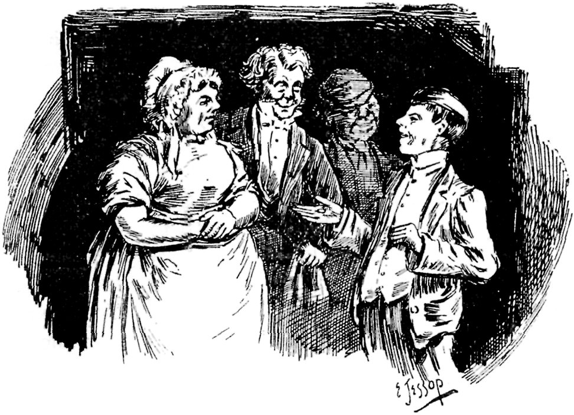
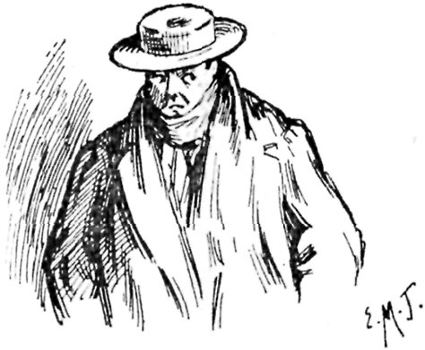

THAT BEAST BEAUTY.
BY KIRBY HARE.
ILLUSTRATIONS BY ERNEST M. JESSOP.
{kind=link}
{kind=link}
I was a man born to misfortune. In fact, my first misfortune, the death of my father, happened three months before I came into the world. When I did duly appear, and was giving a proper howl of disgust, a fresh misfortune fell upon me; my mother departed to join my father, leaving me in the lurch in a vale of unavailing tears. I should have preferred going with my family to that blessed Utopia where there are neither births, deaths, marriages, divorces, breaches of promise, nor return tickets; only, unfortunately, I was not invited. So I became a posthumous orphan, soothed by Daffy's elixir and the skim-milk of human kindness. The milk was none too sweet, human kindness did not spare the rod, and I firmly believe it was Daffy's elixir that turned my hair red. However, I grew up at length into stand-up collars and tail coats, and at the age of seventeen springs was adopted (on trial) by a maiden aunt of seven-and-forty autumns. Like a gleam of sunshine hope flashed into my loveless life, lighting up my path to fortune. But it was only the glimmer of an ignis fatuus, which led me into a quicksand and snuffed itself out in a fog.
{kind=link}
{kind=link}
My relative had plenty of money, and plenty of other equally good qualities in the long run, no doubt; but the period of my adoption was too short to make sure of either the one or the other. If the wealthy maiden was really a worthy soul she did not let her nephew know it. Corporeally she was angular and iron-grey, with a summary tongue and wintry temper, chastened by a fondness for feline favourites. Unluckily, I was always falling foul of the latter, and my aunt continually fell foul of me in consequence. Crabbed age and youth could not live together in our case on account of cats. Age, as represented by the mature virgin, adored the brutes; youth, in the shape of a sprouting hobbledehoy, abhorred them altogether, and one evil minded black Tom in particular. My aunt called him Beauty, in happy ignorance that all her household called him a Beast. I admire beauty in the abstract; I also like it in the concrete; and in the concreted form of youthful feminine humanity I love it. But that feline black Beauty was the most outrageous misnomer unhanged. I had tried to hang him several times, down in the cellar in the dead of night; but his patent cast-iron neck set suspensory science at defiance, and Beauty triumphantly refused to give up the ghost. At first, he kicked and fought against it lustily, and yelled murder with all his might; but after a little practice the malefactor acted more philosophically, regarding the performance quite as part of his nocturnal programme. He never allowed it to make him late for breakfast, nor take away his appetite. Each morning, after execution, the moment the bell rang for prayers, in marched Beauty with a swollen head well on one side, growling anathemas from somewhere round the corner all prayer-time; after which the escaped convict devoured breakfast with the voracity of a stiffnecked cannibal.
Finding the beast utterly unhangable, I determined to try drowning. My nature is by no means a cruel one, quite the reverse; but Beauty's cup of iniquity had long been full to the brim, and running over into the saucer. He had gulped down my canaries like pills, poached my pigeons, fricasseed my rabbits, and made himself an abominable beast generally; and had now committed a crime that capped everything.
My cock bantam, which had won first prize at the Slocum-Pogis poultry show, mysteriously disappeared. Jim, the gardener's boy, and I hunted everywhere without finding any trace till we sighted Beauty. The beast was seated on my verbena bed, with fearfully distended stomach, waving my poor little bantam's tail feathers from between his teeth. Had I been an ancient Egyptian high priest, and Beauty at the top of the tree of holy cats, his diabolical godship should have been made into a mummy instanter. As things were, he had to be drowned forthwith.

AT A CABINET COUNCIL IN THE COAL CELLAR.
{kind=link}
{kind=link}
At a cabinet council in the coal cellar, composed of the cook, footman, Jim, and myself, all the executive details were arranged; my aunt being, of course, kept in happy ignorance of our intentions. As soon as my respected relative uttered the preliminary snore of her afternoon siesta, Beauty made an involuntary exit out of the house, all the lower doors and windows having been carefully fastened. Then commenced a silent cat-hunt, a serio-comic drama in dumb show, with a crowded audience breathlessly gazing from the windows. The scenery was a series of dissolving views, beginning on a flower-decked lawn, and ending at a mill-pool a mile or so away from the audience. Beauty played leading actor with considerable activity, notwithstanding the drawback of being handicapped with an undigested bantam. He flew over dozens of flower-beds, through all the outhouses, over the stable, out into the park, up and down all the tallest trees, and all over the country, till he took refuge in the deserted old mill. There we wriggled him into an ancient sack, and tied him up in the harmonious company of a couple of brickbats. Then we committed the body to the deep. The burial service was short, but hearty. "One—two—three, and away!" sung out in unison, was the special form for the occasion, accompanied by Beauty's farewell blessing as we "awayed" him into the silent depths of the mill-dam. There was a splash, a shrill cry from a frightened moorhen, a short jubilate from Jim, to which I piously added "amen," and all was over. Jim ran home with half-a-sovereign in his pocket, while I walked back to dress for dinner. On the stairs I met my aunt, already in evening array, and looking hungry. I knew the sign, and stealthily tried to vanish, vainly.
{kind=link}
"Late again, Samuel!" she remarked, with a freezing spectacle-gleam that fixed me to the stair-carpet—my right foot two steps above the left. "You have just come in, I suppose. Have you seen Beauty?"
Horror! Could she suspect anything? I felt my face growing the colour of my hair, and my tongue frozen solid.
"Can't you answer?" she went on wrathfully. "And can't you stand up straight?"
I pulled my legs together and commenced to stammer.
"I—I saw Beauty out—outside, aunt, in the garden," I managed to mutter.
"Which way was he going?"
"Why, I think he was running towards the house, aunt."
{kind=link}
And then the remembrance of how he was running—thirty miles an hour, with tail on end and ears flat to his head, with Jim and my long-legged self racing in rear—made me choke with laughter I was forced to swallow. But my aunt's eyes were on me, and her gold-rimmed barnacles blazed through me, so I suffocated in silence.
"Don't stand making faces like an idiot. Go and dress, and be quick," snapped my loving relative, as she marched away downstairs and I flew to the region above.
My bedroom door was partly open, and I dashed in hastily, pulling off my things as I went.
{kind=link}
{kind=link}
My evening clothes were laid out ready on the bed, and—what was that on my shirt?—a black mass of—something moving!—some animal! Why, heavens and earth, it was the ghost of—that beast Beauty! It was Beauty himself! I ran for the poker; Beauty rushed out of the door. Confound that rotten old sack!
I was late for dinner, and found Beauty seated in my chair, sleek and dry, with a ravenously whetted appetite. My aunt was so pleased with her favourite's improved appearance that she became quite affable, even to me. I was informed that as I had not been looking well lately I might go for a few days' change to the seaside; the salubrious air of Muddiford-on-the-Ooze would just suit me. What a blessing! To have escaped from those ice-gleaming spectacles and from that resuscitated beast Beauty I would gladly have gone to Jericho, much more to Muddiford-on-the-Ooze. Then my aunt continued her course of instructions, with the nearest approach to a smile I had ever seen on her face.
"You will enjoy yourself, I am sure, Samuel, and you will also be able to show what pains you can take to please me," she said, sipping her first glass of Burgundy with approving relish. "There is to be a show at Muddiford the day after to-morrow, at which I intend exhibiting, and you will be able to manage everything for me; so mind you are careful to do your best."
"I shall be most delighted," I declared gushingly. "What show is it? And what can I have the pleasure of taking charge of for you, my dear aunt?"
"It's the Grand All-England Cat Show, and you will take Beauty; and I shall be greatly disappointed if you do not bring me back the first prize. So be on your best behaviour, Samuel, or perhaps you may live to regret it."
My jaw dropped, and I thought I should have slid under the table. Good heavens! It was that beast Beauty who was to go for a holiday, while I was to act as the infernal fiend's keeper! O my prophetic soul—my aunt! But there was no help for it; I was bound in bonds of gold.
{kind=link}
{kind=link}
{kind=link}
On the following day, Beauty and I were duly driven to the station, the former being luxuriously nested in a small hamper specially furnished for the occasion. About half-way on the road, just as we had mounted a long, steep hill, the cat managed to roll his residence from the stern of the dog-cart and trundle himself half-way home again. Luckily, he screeched blue murder at the tip-top of his voice, or we might not have missed the beast. As it was, his cyclical retrogression made us just too late for the train, and we had to wait two hours for the next. So I seated myself on the hamper—like Patience on the proverbial monument—and beheld the coachman depart homewards, with a sympathetic hat-touching salute, leaving me with a gloomy conviction of coming misfortune. The train, when it did arrive, was tolerably empty, and I secured a vacant first-class. For a time all went happily; then the cat commenced groaning.
My aunt having solemnly ordered me to give the brute dinner, I now prepared to stop his mouth with cold chicken. While I was cautiously unfastening the hamper lid, Beauty remained quiet as a dormouse; and then he proceeded personally to assist the unfastening, with a vengeance. There was a bouncing volcanic eruption, a blood-curdling howl, a mixed-up whirling round the carriage, and then—smash!—bang through the window went Beauty!—leaving me doubled up on the seat, holding out half a chicken. It was a forty-feline-power hurricane, while it lasted; and drops of perspiration trickled down my nose on to the chicken, at which I sat stupidly staring. After a dazed pause I staggered to the broken window and looked out. There was Beauty, with a perpendicular tail like a young fir-tree, going like great guns in exactly the wrong direction. We had just come through a long tunnel, and the last I saw of my aunt's pet demon was as he dived headlong into its Hades-like mouth. And I had to take home first prize for him from the Grand All-England Cat Show!
{kind=link}
{kind=link}
When the 4.40 down express arrived at Muddiford-on-the-Ooze station, an auburn-haired youth limply emerged from a first-class carriage. In his arms he bore a basket, and his grey-green eyes gleamed with incipient catalepsy. Yes, such would undoubtedly have been my description had I posed as the momentary hero of a penny novelette. I forgot all about my luggage, imbecilely clinging to the late habitation of the lost beast Beauty, wandering I knew not why nor whither. Outside the station, round a quiet corner, my steps were arrested by the surprising sight of—Beauty!—the very identical devil himself! There stood the unhangable, undrownable, hurricane-creating beast, looking as serene as a newly-born black cherub, washing his fiendish face! I approached on tiptoe, breathlessly, with the basket behind my back and the half chicken extended as a peaceable card of introduction. He scented it instantly—my aunt always keeping Beauty's tit-bits until sufficiently gamey to suit his highly epicurean taste.
With a finishing toe-touch to his whiskers, he amicably trotted up to me and—yes!—actually rubbed against my new trousers! What could have happened to him! Had his run through the tunnel turned him out virtuous? And how could he possibly have got here? Experience has shown that a leopard can change his spots, and a negro can grow spotted; but could a diabolical cat become even as a sucking dove and fly over twelve miles all in the space of twenty minutes? Impossible! So I put on a pair of folder-glasses and scrutinised this new arrival doubtingly. No; it was not Beauty—not nearly ugly enough. It was a twin, but larger, blacker, sleeker, a million times more amiable, and very much fatter. Ah!—ha, ha!—hurrah!—happy thought! Why not? I would. And, thereupon, I instantly did it.
Placing the basket gently on the ground, I opened the lid and put in the cold chicken, when lo! in jumped the amiable twin. Half an hour later that basket, that heaven-descended twin, and that successful chicken, were safely deposited in custody of the cat-show steward, with the errant Beauty's entry ticket affixed. If the steward had never seen the real original he would never discover the difference; and if he did happen to be acquainted with the genuine article he could but think that the beast was surprisingly improved, and might even award it first prize for having turned over such a notable new leaf. And for the same reason, my aunt ought to be highly delighted at her favourite's favourable transformation. My heart was lightened of its oppressive troubles, as my hands were free from their feline load. With a hearty appetite I ate an excellent dinner at the hotel, went to the theatre, and turned into bed thankful for all fortune's favours.
{kind=link}
During the two following days, carefully steering clear of the cat-show, I enjoyed my freedom gaily, and had—what our three-thousand-miles-removed cousins would call—real good time. On the third morning a letter arrived from my aunt, with an enclosure which for the first moment I took to be a big cheque—a grateful offering, as I hoped, for services skilfully performed. However, it proved to be merely a second letter, in writing that was strange to me, and which with some curiosity I proceeded to peruse. As I unfolded the sheet, a vision suddenly crossed my mind of that savage beast Beauty; a chilly shiver shot through my marrow, and I sent the waiter for soda and brandy. It was an awful thought of what that unkillable cat might do! There he was, rampaging over a civilised country populated with children and lambs, and other unprotected innocents, half mad, perhaps, with hunger, where neither canaries nor pigeons, rabbits or cold chicken were grabbable. What desperate murders he might commit! And should I be held responsible? Here the timely arrival of the waiter helped to raise my spirits by a strong dose of B. and S., and I began the enclosed letter.
{kind=link}
{kind=link}
It was headed from the cat-show secretary's office. Why, of course, that charming twin had got first prize, no doubt. Let us see. "Dear Madam," so ran the official note, "I beg to call your attention to what I imagine must, in some way, have been an oversight. Your cat, described on the entrance form as 'a black male, named Beauty,' which was, on the evening of its arrival, placed in the class pertaining to the descriptive form, was found this morning to have presented us with four remarkably fine kittens. This, of course, necessitated the family's removal from the male cat class. I have much pleasure in being able to inform you that both mother and kittens are in the best of health, and will be carefully attended upon. If you will kindly forward your instructions respecting their disposal, I shall be greatly obliged." That was the note, and wildly did the letters dance before my eyes.
{kind=link}
Having saved myself from fainting by finishing the B. and S., I sat for some minutes gasping for breath. Then I rubbed my eyes and reread that awful epistle. Yes—it was so—in solemn, sober black ink! Beauty's twin had got four fine kittens! Great Jehoshaphat! How could I ever get over those confounded kittens! It was too late to murder them. And my aunt—but stop! Let me read her letter; it might suggest something—some feline legerdemain method of conjuring four fine kittens into a first prize black male cat. So here goes. And this is how it went: "I always considered you to be a fool, Samuel, but nothing worse, until now. Unless the enclosed letter is immediately fully explained, and the matter set right, I shall plainly let you know what I do think of you now, and act accordingly. See the secretary, and telegraph me the result at once." Not much hope in that, worse luck; only a limited respite.
{kind=link}
Away I went to the show, saw the secretary—from a safe distance—and immediately telegraphed: "Have seen the secretary. Hard at work setting matters right. Awfully sorry." Then I hired a boat, and went fishing for the rest of the day. In the evening I wired: "Beauty must have got changed. Cats now all going home. Found clue and am following up. All right shortly." But my aunt's patience had expired. Next morning came a curt note saying she would at once join me, and either rescue Beauty or settle that secretary. How could I ever face those searching spectacles! I fled. From a lonely spot on the wilds of Dartmoor I wired: "Am following clue sharp. Getting close up. Good news next time." Back came an answer: "Shall be with you to-morrow at noon." At noon next day, I boarded the mail packet Tongariro, bound from Plymouth to New Zealand.

OFF TO NEW ZEALAND.
{kind=link}